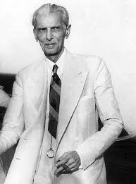
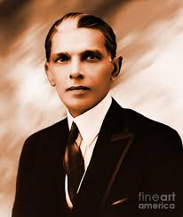
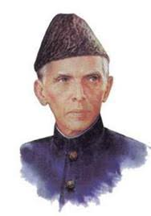
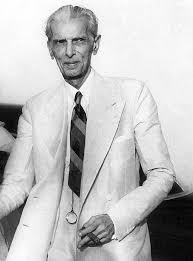
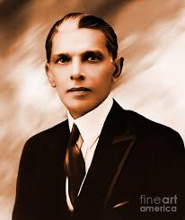
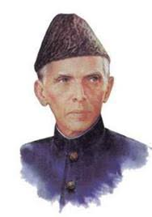

MUHAMMAD ALI JINNAH:-
(Founder of our nation)
 


Muhammad Ali Jinnah, born on December 25, 1876, in Karachi, was
a towering political figure whose leadership led to the creation of Pakistan.Jinnah's early education took place in Bombay
(now Mumbai) and later in London, where he studied law at Lincoln's Inn. Returning to India, he
quickly established himself as a successful.



Muhammad Ali Jinnah, born on December 25, 1876, in Karachi, was
a towering political figure whose leadership led to the creation of Pakistan.Jinnah's early education took place in Bombay
(now Mumbai) and later in London, where he studied law at Lincoln's Inn. Returning to India, he
quickly established himself as a successful.
Jinnah initially joined the Indian National Congress in 1906, advocating
for Hindu-Muslim unity and Indian self-governance. However, the growingdivide between Hindus and Muslims led him to join the All India Muslim
League in 1913. Over time, he emerged as the primary spokesperson forMuslim interests, advocating for their rights and political
representation.
The 1930s and 1940s were transformative for Jinnah and the Indian
political landscape. He articulated the Two-Nation Theory, arguing thatMuslims and Hindus were distinct nations with different religions,
philosophies, social customs, and literature. This perspective was adriving force behind his demand for a separate Muslim state. His
leadership in the Lahore Resolution of 1940 formalized this demand, layingthe foundation for Pakistan.
Jinnah's unwavering commitment to the cause, despite personal healthchallenges, was pivotal. His negotiations with the British and the Indian
National Congress, particularly with figures like Mahatma Gandhi andJawaharlal Nehru, were crucial in the eventual partition of India. On
August 14, 1947, Pakistan emerged as an independent nation, with Jinnah as its first Governor-General and President of its Constituent Assembly.
As "Quaid-e-Azam" (Great Leader), Jinnah's vision for Pakistanwas a democratic and inclusive state, emphasizing justice, equality, and
fraternity. He worked tirelessly to stabilize the nascent country,focusing on nation-building and establishing governmental
structures.
Date of Birth:-
- Jinnah born on 25th December 1876(Born at Wazir Mansion in Karachi).
Date of Death:-
- Jinnah died in 11th September 1948 at the (aged of 71) at Karachi, Federal Capital Territory, Pakistan.
Education:-
- He got his primary education from Karachi and passsed Matriculation examination at the age of 15 years.
- In Karachi, he attended the Sindh Madrassatul Islam and the Christian missionary Society High School.
He gained
his matriculation form omay University at the High School.
Profession:-
- Jinnah is y Profession Barrister-Politician.But also he is a (Founder of Pakistan).
Jinnah's Family:-
- Jinnah's father name is Jinnah Poonja.
- Jinnah's mother name is Mithibai.